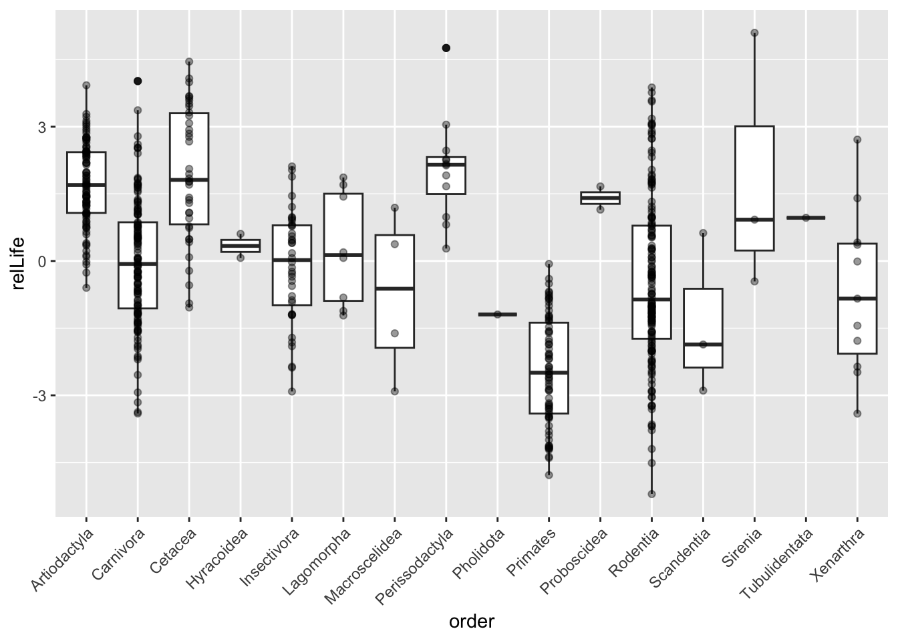
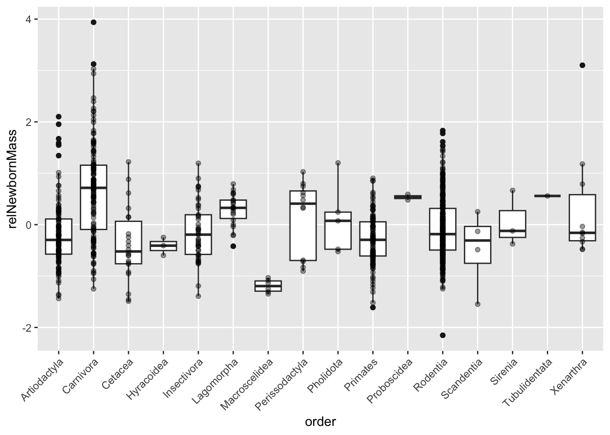
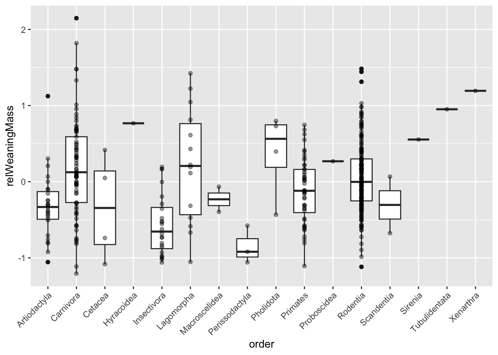
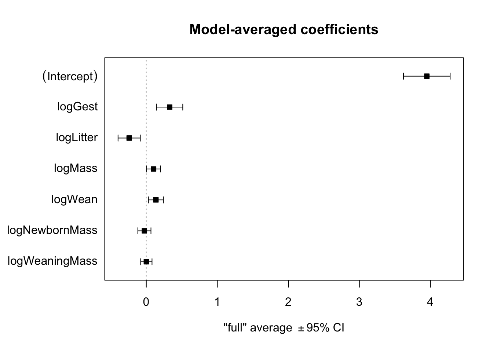
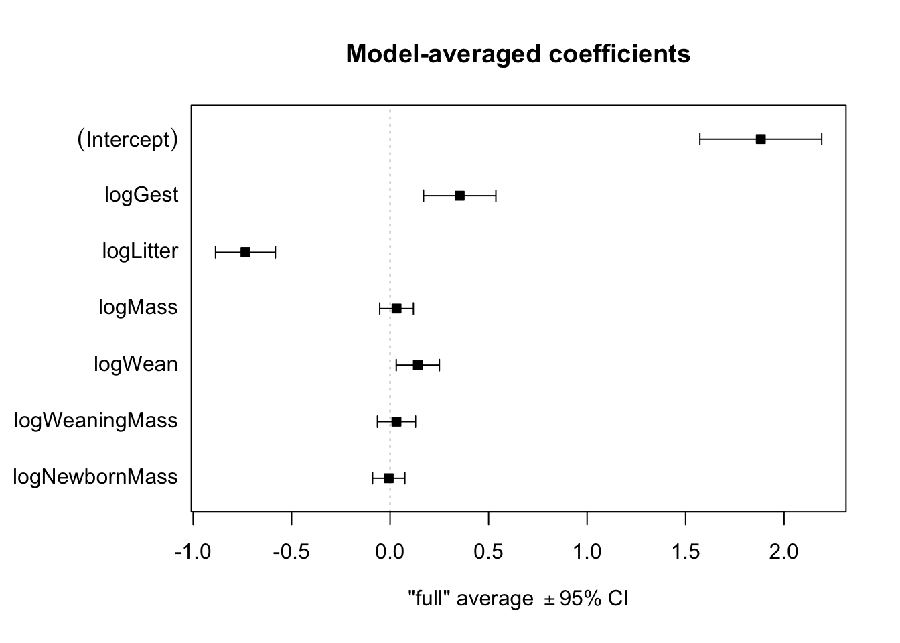

library(tidyverse)
d <- read_tsv("https://raw.githubusercontent.com/difiore/ada-2024-datasets/main/Mammal_lifehistories_v2.txt", col_names = TRUE)exercise-12
Exercise 12
Practice Model Selection
Preliminaries
- Load the “Mammal_lifehistories_v2” dataset as a “tibble” named d.
- This dataset compiles life history and other variables for over 1400 species of placental mammals from 17 different Orders.
Data source:
Ernest SKM. (2003). Life history characteristics of placental nonvolant mammals. Ecology 84: 3402–3402.
- Use {skimr} package to conduct exploratory data analysis.
library(skimr)
skim(d)| Name | d |
| Number of rows | 1440 |
| Number of columns | 14 |
| _______________________ | |
| Column type frequency: | |
| character | 4 |
| numeric | 10 |
| ________________________ | |
| Group variables | None |
Variable type: character
| skim_variable | n_missing | complete_rate | min | max | empty | n_unique | whitespace |
|---|---|---|---|---|---|---|---|
| order | 0 | 1 | 7 | 14 | 0 | 17 | 0 |
| family | 0 | 1 | 6 | 15 | 0 | 96 | 0 |
| Genus | 0 | 1 | 3 | 16 | 0 | 618 | 0 |
| species | 0 | 1 | 3 | 17 | 0 | 1191 | 0 |
Variable type: numeric
| skim_variable | n_missing | complete_rate | mean | sd | p0 | p25 | p50 | p75 | p100 | hist |
|---|---|---|---|---|---|---|---|---|---|---|
| mass(g) | 0 | 1 | 3.835767e+05 | 5.055163e+06 | -999 | 50 | 403.02 | 7009.17 | 1.490000e+08 | ▇▁▁▁▁ |
| gestation(mo) | 0 | 1 | -2.872500e+02 | 4.553600e+02 | -999 | -999 | 1.05 | 4.50 | 2.146000e+01 | ▃▁▁▁▇ |
| newborn(g) | 0 | 1 | 6.703150e+03 | 9.091252e+04 | -999 | -999 | 2.65 | 98.00 | 2.250000e+06 | ▇▁▁▁▁ |
| weaning(mo) | 0 | 1 | -4.271700e+02 | 4.967100e+02 | -999 | -999 | 0.73 | 2.00 | 4.800000e+01 | ▆▁▁▁▇ |
| wean mass(g) | 0 | 1 | 1.604893e+04 | 5.036502e+05 | -999 | -999 | -999.00 | 10.00 | 1.907500e+07 | ▇▁▁▁▁ |
| AFR(mo) | 0 | 1 | -4.081200e+02 | 5.049700e+02 | -999 | -999 | 2.50 | 15.61 | 2.100000e+02 | ▆▁▁▁▇ |
| max. life(mo) | 0 | 1 | -4.902600e+02 | 6.153000e+02 | -999 | -999 | -999.00 | 147.25 | 1.368000e+03 | ▇▁▅▁▁ |
| litter size | 0 | 1 | -5.563000e+01 | 2.348800e+02 | -999 | 1 | 2.27 | 3.84 | 1.418000e+01 | ▁▁▁▁▇ |
| litters/year | 0 | 1 | -4.771400e+02 | 5.000300e+02 | -999 | -999 | 0.38 | 1.15 | 7.500000e+00 | ▇▁▁▁▇ |
| refs | 0 | 1 | 1.054762e+12 | 3.619709e+13 | 1 | 116 | 1229.00 | 1242249.75 | 1.368101e+15 | ▇▁▁▁▁ |
- Which of the variables are categorical and which are numeric?
- Categorical: order, family, Genus, and species
- Numeric: mass(g), gestation(mo), newborn(g), weaning(mo), wean mass(g), AFR(mo), max. life(mo), litter size, litters/year, refs
Challenge
Step 1
- Replace all values of -999 (the authors’ code for missing data) with
NA.
d <- d %>% mutate(across(`mass(g)`:`litters/year`, \(x) na_if(x, -999)))
# For `across()` Supply arguments directly to `.fns` through an anonymous functionStep 2
- Drop the variables litter size and refs.
d <- d %>% dplyr::select(-refs, -`litter size`)Step 3
- Log transform all of the other numeric variables.
s <- d %>% mutate(across(`mass(g)`:`litters/year`, \(x) log(x)))
# make new column names
s <- s %>% rename(logMass = `mass(g)`,
logGest = `gestation(mo)`,
logNewbornMass = `newborn(g)`,
logWean = `weaning(mo)`,
logWeaningMass = `wean mass(g)`,
logAFR = `AFR(mo)`,
logLife = `max. life(mo)`,
logLitter = `litters/year`
)Step 4
- Regress the (now log transformed) age [logGest, logWean, logAFR (age at first reproduction), and logLife (maximum lifespan)] and mass [logNewbornMass and logWeaningMass] variables on (now log transformed) overall body logMass and add the residuals to the dataframe as new variables (relGest, relWean, relAFR, relLife, relNewbornMass, and relWeaningMass).
HINT: Use “na.action=na.exclude” in your
lm()calls. With this argument set, the residuals will be padded to the correct length by inserting NAs for cases with missing data.
relGest_model <- lm(logMass ~ logGest, na.action = na.exclude, data = s)
s$relGest <- resid(relGest_model)
relWean_model <- lm(logMass ~ logWean, na.action = na.exclude, data = s)
s$relWean <- resid(relWean_model)
relAFR_model <- lm(logMass ~ logAFR, na.action = na.exclude, data = s)
s$relAFR <- resid(relAFR_model)
relLife_model <- lm(logMass ~ logLife, na.action = na.exclude, data = s)
s$relLife <- resid(relLife_model)
relNewbornMass_model <- lm(logMass ~ logNewbornMass, na.action = na.exclude , data = s)
s$relNewbornMass <- resid(relNewbornMass_model)
relWeaningMass_model <- lm(logMass ~ logWeaningMass, na.action = na.exclude, data = s)
s$relWeaningMass <- resid(relWeaningMass_model)Step 5
- Plot residuals of max lifespan (relLife) in relation to Order. Which mammalian orders have the highest residual lifespan?
- Artiodactyla, Cetacea, Perissodactyla, Proboscidea
p1 <- ggplot(data = s %>% drop_na(relLife),
aes(x = order, y = relLife)) +
geom_boxplot() +
geom_point(alpha = 0.4) +
theme(axis.text.x = element_text(angle = 45, vjust = 1, hjust = 1)) +
scale_y_continuous(limits = c(NA, NA))
p1
- Plot residuals of newborn mass (relNewbornMass) in relation to Order. Which mammalian orders have the have highest residual newborn mass?
- Carnivora, Perissodactyla
- Proboscidea, Tubulidentata also high but very low n
p2 <- ggplot(data = s %>% drop_na(relNewbornMass),
aes(x = order, y = relNewbornMass)) +
geom_boxplot() +
geom_point(alpha = 0.4) +
theme(axis.text.x = element_text(angle = 45, vjust = 1, hjust = 1)) +
scale_y_continuous(limits = c(NA, NA))
p2
- Plot residuals of weaning mass (relWeaningMass) in relation to Order. Which mammalian orders have the have highest relative weaning mass?
- Pholidota, Lagomorpha, Carnivora
- Sirenia, Tubulidentata, Xenarthra, Hyracoidea also high but very low n
p3 <- ggplot(data = s %>% drop_na(relWeaningMass),
aes(x = order, y = relWeaningMass)) +
geom_boxplot() +
geom_point(alpha = 0.4) +
theme(axis.text.x = element_text(angle = 45, vjust = 1, hjust = 1)) +
scale_y_continuous(limits = c(NA, NA))
p3
Step 6
- Run models and a model selection process to evaluate what variables best predict each of the two response variables, logLife and logAFR, from the set of the following predictors: logGest, logNewbornMass, logWean, logWeaningMass, logLitters, and logMass.
Models and model selection for logLife
- The best model for logLife includes predictor variables logWean, logLitter, logGest, and logMass with AICc of 264.6
- Five models have a delta AICc of 4 or less
- logGest, logLitter, and logWean appear in all “top” models
# winnow dataset to drop rows that are missing the response variable or any of the predictors
s1 <- s %>% drop_na(logLife, logGest, logNewbornMass, logWeaningMass, logWean, logLitter, logMass)
# model selection using reverse screening (the long way)
full <- lm(data = s1, logLife ~ logGest + logNewbornMass + logWeaningMass + logWean + logLitter + logMass)
summary(full)
Call:
lm(formula = logLife ~ logGest + logNewbornMass + logWeaningMass +
logWean + logLitter + logMass, data = s1)
Residuals:
Min 1Q Median 3Q Max
-1.41516 -0.24524 -0.02146 0.30217 1.02653
Coefficients:
Estimate Std. Error t value Pr(>|t|)
(Intercept) 3.861775 0.173884 22.209 < 2e-16 ***
logGest 0.376680 0.098926 3.808 0.000186 ***
logNewbornMass -0.067921 0.058839 -1.154 0.249715
logWeaningMass 0.008042 0.069187 0.116 0.907585
logWean 0.126879 0.054254 2.339 0.020334 *
logLitter -0.227594 0.079839 -2.851 0.004816 **
logMass 0.128250 0.056485 2.271 0.024230 *
---
Signif. codes: 0 '***' 0.001 '**' 0.01 '*' 0.05 '.' 0.1 ' ' 1
Residual standard error: 0.4482 on 202 degrees of freedom
Multiple R-squared: 0.7713, Adjusted R-squared: 0.7645
F-statistic: 113.6 on 6 and 202 DF, p-value: < 2.2e-16drop1(full, test = "F") # logWeaningMass has non-sig p-value, lowest F, and lowest increase in RSS Single term deletions
Model:
logLife ~ logGest + logNewbornMass + logWeaningMass + logWean +
logLitter + logMass
Df Sum of Sq RSS AIC F value Pr(>F)
<none> 40.579 -328.57
logGest 1 2.91254 43.491 -316.08 14.4986 0.000186 ***
logNewbornMass 1 0.26769 40.846 -329.20 1.3326 0.249715
logWeaningMass 1 0.00271 40.581 -330.56 0.0135 0.907585
logWean 1 1.09864 41.677 -324.99 5.4690 0.020334 *
logLitter 1 1.63243 42.211 -322.33 8.1262 0.004816 **
logMass 1 1.03563 41.614 -325.30 5.1553 0.024230 *
---
Signif. codes: 0 '***' 0.001 '**' 0.01 '*' 0.05 '.' 0.1 ' ' 1m1 <- update(full, . ~ . - logWeaningMass)
summary(m1)
Call:
lm(formula = logLife ~ logGest + logNewbornMass + logWean + logLitter +
logMass, data = s1)
Residuals:
Min 1Q Median 3Q Max
-1.41851 -0.24163 -0.01749 0.30229 1.02797
Coefficients:
Estimate Std. Error t value Pr(>|t|)
(Intercept) 3.86540 0.17065 22.651 < 2e-16 ***
logGest 0.37649 0.09867 3.816 0.00018 ***
logNewbornMass -0.06478 0.05212 -1.243 0.21538
logWean 0.12761 0.05376 2.374 0.01853 *
logLitter -0.22839 0.07935 -2.878 0.00443 **
logMass 0.13261 0.04212 3.148 0.00189 **
---
Signif. codes: 0 '***' 0.001 '**' 0.01 '*' 0.05 '.' 0.1 ' ' 1
Residual standard error: 0.4471 on 203 degrees of freedom
Multiple R-squared: 0.7713, Adjusted R-squared: 0.7657
F-statistic: 136.9 on 5 and 203 DF, p-value: < 2.2e-16drop1(m1, test = "F") # logNewbornMass has non-sig p-value, lowest F, and lowest increase in RSSSingle term deletions
Model:
logLife ~ logGest + logNewbornMass + logWean + logLitter + logMass
Df Sum of Sq RSS AIC F value Pr(>F)
<none> 40.581 -330.56
logGest 1 2.91040 43.492 -318.08 14.5587 0.0001803 ***
logNewbornMass 1 0.30876 40.890 -330.97 1.5445 0.2153774
logWean 1 1.12655 41.708 -326.83 5.6353 0.0185347 *
logLitter 1 1.65592 42.237 -324.20 8.2834 0.0044291 **
logMass 1 1.98136 42.563 -322.59 9.9114 0.0018901 **
---
Signif. codes: 0 '***' 0.001 '**' 0.01 '*' 0.05 '.' 0.1 ' ' 1m2 <- update(m1, . ~ . - logNewbornMass)
summary(m2)
Call:
lm(formula = logLife ~ logGest + logWean + logLitter + logMass,
data = s1)
Residuals:
Min 1Q Median 3Q Max
-1.46138 -0.25171 -0.03376 0.31187 1.04212
Coefficients:
Estimate Std. Error t value Pr(>|t|)
(Intercept) 3.99891 0.13277 30.119 < 2e-16 ***
logGest 0.29408 0.07316 4.019 8.21e-05 ***
logWean 0.14218 0.05253 2.706 0.00738 **
logLitter -0.24745 0.07796 -3.174 0.00174 **
logMass 0.08592 0.01907 4.506 1.11e-05 ***
---
Signif. codes: 0 '***' 0.001 '**' 0.01 '*' 0.05 '.' 0.1 ' ' 1
Residual standard error: 0.4477 on 204 degrees of freedom
Multiple R-squared: 0.7696, Adjusted R-squared: 0.7651
F-statistic: 170.3 on 4 and 204 DF, p-value: < 2.2e-16drop1(m2, test = "F") # all explanatory variables are significant, model 2 is bestSingle term deletions
Model:
logLife ~ logGest + logWean + logLitter + logMass
Df Sum of Sq RSS AIC F value Pr(>F)
<none> 40.890 -330.97
logGest 1 3.2383 44.128 -317.04 16.1557 8.207e-05 ***
logWean 1 1.4682 42.358 -325.60 7.3248 0.007377 **
logLitter 1 2.0193 42.909 -322.90 10.0743 0.001736 **
logMass 1 4.0694 44.959 -313.14 20.3024 1.113e-05 ***
---
Signif. codes: 0 '***' 0.001 '**' 0.01 '*' 0.05 '.' 0.1 ' ' 1# logWean has lowest F value and lowest increase in RSS
m3 <- update(m2, . ~ . - logWean)
summary(m3) # lower adjusted R-squared than model 2
Call:
lm(formula = logLife ~ logGest + logLitter + logMass, data = s1)
Residuals:
Min 1Q Median 3Q Max
-1.51112 -0.23999 -0.01843 0.29693 1.11276
Coefficients:
Estimate Std. Error t value Pr(>|t|)
(Intercept) 4.13652 0.12453 33.218 < 2e-16 ***
logGest 0.38696 0.06560 5.898 1.50e-08 ***
logLitter -0.36413 0.06595 -5.521 1.01e-07 ***
logMass 0.07594 0.01899 3.998 8.91e-05 ***
---
Signif. codes: 0 '***' 0.001 '**' 0.01 '*' 0.05 '.' 0.1 ' ' 1
Residual standard error: 0.4546 on 205 degrees of freedom
Multiple R-squared: 0.7613, Adjusted R-squared: 0.7578
F-statistic: 217.9 on 3 and 205 DF, p-value: < 2.2e-16# model selection using AIC (to verify)
library(MASS)
(step1 <- stepAIC(full, scope = . ~ ., direction = "both"))Start: AIC=-328.57
logLife ~ logGest + logNewbornMass + logWeaningMass + logWean +
logLitter + logMass
Df Sum of Sq RSS AIC
- logWeaningMass 1 0.00271 40.581 -330.56
- logNewbornMass 1 0.26769 40.846 -329.20
<none> 40.579 -328.57
- logMass 1 1.03563 41.614 -325.30
- logWean 1 1.09864 41.677 -324.99
- logLitter 1 1.63243 42.211 -322.33
- logGest 1 2.91254 43.491 -316.08
Step: AIC=-330.56
logLife ~ logGest + logNewbornMass + logWean + logLitter + logMass
Df Sum of Sq RSS AIC
- logNewbornMass 1 0.30876 40.890 -330.97
<none> 40.581 -330.56
+ logWeaningMass 1 0.00271 40.579 -328.57
- logWean 1 1.12655 41.708 -326.83
- logLitter 1 1.65592 42.237 -324.20
- logMass 1 1.98136 42.563 -322.59
- logGest 1 2.91040 43.492 -318.08
Step: AIC=-330.97
logLife ~ logGest + logWean + logLitter + logMass
Df Sum of Sq RSS AIC
<none> 40.890 -330.97
+ logNewbornMass 1 0.3088 40.581 -330.56
+ logWeaningMass 1 0.0438 40.846 -329.20
- logWean 1 1.4682 42.358 -325.60
- logLitter 1 2.0193 42.909 -322.90
- logGest 1 3.2383 44.128 -317.04
- logMass 1 4.0694 44.959 -313.14
Call:
lm(formula = logLife ~ logGest + logWean + logLitter + logMass,
data = s1)
Coefficients:
(Intercept) logGest logWean logLitter logMass
3.99891 0.29408 0.14218 -0.24745 0.08592 detach(package:MASS)
# model comparisons using AICc
library(MuMIn)
full <- lm(data = s1, logLife ~ logGest + logNewbornMass + logWeaningMass + logWean + logLitter + logMass, na.action = na.fail)
# include 'na.fail' in 'na.action' argument to prevent `dredge()` from trying to fit submodels with different data sets than the global model if there are missing values
mods <- dredge(full)
(mods_delta <- subset(mods, delta <= 4)) # limit models to delta AICc of 4 of lessGlobal model call: lm(formula = logLife ~ logGest + logNewbornMass + logWeaningMass +
logWean + logLitter + logMass, data = s1, na.action = na.fail)
---
Model selection table
(Intrc) lgGst lgLtt lgMss lgNwM logWn lgWnM df logLik AICc
24 3.999 0.2941 -0.2474 0.08592 0.1422 6 -126.072 264.6
32 3.865 0.3765 -0.2284 0.13260 -0.06478 0.1276 7 -125.280 265.1
56 3.989 0.3077 -0.2470 0.10960 0.1423 -0.028680 7 -125.960 266.5
64 3.862 0.3767 -0.2276 0.12830 -0.06792 0.1269 0.008042 8 -125.273 267.3
52 4.111 0.2894 -0.2669 0.1346 0.087700 6 -128.045 268.5
delta weight
24 0.00 0.394
32 0.56 0.298
56 1.92 0.151
64 2.71 0.102
52 3.95 0.055
Models ranked by AICc(x) # average coefficients for top models where delta.aicc <= 4
mods.avg <- summary(model.avg(mods, subset = delta <= 4, fit = TRUE))
mods.avg$msTable df logLik AICc delta weight
1235 6 -126.0718 264.5595 0.0000000 0.3940678
12345 7 -125.2797 265.1167 0.5572036 0.2982467
12356 7 -125.9598 266.4769 1.9174343 0.1510794
123456 8 -125.2727 267.2655 2.7060124 0.1018516
1256 6 -128.0455 268.5068 3.9473269 0.0547545# CIs for averaged beta coefficient estimates
confint(mods.avg) 2.5 % 97.5 %
(Intercept) 3.62147891 4.27793347
logGest 0.14377472 0.51396308
logLitter -0.39724571 -0.08422565
logMass 0.02176916 0.19621043
logWean 0.03023157 0.24151902
logNewbornMass -0.17190901 0.04075518
logWeaningMass -0.13911025 0.14748030plot(mods.avg, full = TRUE)
detach(package:MuMIn)Models and model selection for logAFR
- The best model for logAFR includes predictor variables logWean, logLitter, logGest, and logMass with AICc of 412.0
- Seven models have a delta AICc of 4 or less
- logGest, logLitter, and logWean appear in all “top” models
# winnow dataset to drop rows that are missing the response variable or any of the predictors
s2 <- s %>% drop_na(logAFR, logGest, logNewbornMass, logWeaningMass, logWean, logLitter, logMass)
# model selection using reverse screening (the long way)
full <- lm(data = s2, logAFR ~ logGest + logNewbornMass + logWeaningMass + logWean + logLitter + logMass)
summary(full)
Call:
lm(formula = logAFR ~ logGest + logNewbornMass + logWeaningMass +
logWean + logLitter + logMass, data = s2)
Residuals:
Min 1Q Median 3Q Max
-1.27610 -0.36282 0.03122 0.37661 1.72945
Coefficients:
Estimate Std. Error t value Pr(>|t|)
(Intercept) 1.77650 0.18352 9.680 < 2e-16 ***
logGest 0.39649 0.10779 3.678 0.000286 ***
logNewbornMass -0.05543 0.06529 -0.849 0.396731
logWeaningMass 0.05424 0.07332 0.740 0.460129
logWean 0.13148 0.05688 2.312 0.021592 *
logLitter -0.71737 0.07869 -9.117 < 2e-16 ***
logMass 0.05226 0.06139 0.851 0.395415
---
Signif. codes: 0 '***' 0.001 '**' 0.01 '*' 0.05 '.' 0.1 ' ' 1
Residual standard error: 0.5219 on 257 degrees of freedom
Multiple R-squared: 0.8213, Adjusted R-squared: 0.8171
F-statistic: 196.8 on 6 and 257 DF, p-value: < 2.2e-16drop1(full, test = "F") # logWeaningMass has non-sig p-value, lowest F, and lowest increase in RSS Single term deletions
Model:
logAFR ~ logGest + logNewbornMass + logWeaningMass + logWean +
logLitter + logMass
Df Sum of Sq RSS AIC F value Pr(>F)
<none> 69.997 -336.46
logGest 1 3.6852 73.682 -324.91 13.5306 0.0002859 ***
logNewbornMass 1 0.1963 70.193 -337.72 0.7206 0.3967307
logWeaningMass 1 0.1490 70.146 -337.90 0.5472 0.4601285
logWean 1 1.4553 71.452 -333.03 5.3434 0.0215917 *
logLitter 1 22.6366 92.634 -264.49 83.1123 < 2.2e-16 ***
logMass 1 0.1974 70.194 -337.72 0.7247 0.3954149
---
Signif. codes: 0 '***' 0.001 '**' 0.01 '*' 0.05 '.' 0.1 ' ' 1m1 <- update(full, . ~ . - logWeaningMass)
summary(m1)
Call:
lm(formula = logAFR ~ logGest + logNewbornMass + logWean + logLitter +
logMass, data = s2)
Residuals:
Min 1Q Median 3Q Max
-1.26465 -0.35319 0.02337 0.36704 1.73884
Coefficients:
Estimate Std. Error t value Pr(>|t|)
(Intercept) 1.79759 0.18114 9.924 < 2e-16 ***
logGest 0.39397 0.10764 3.660 0.000306 ***
logNewbornMass -0.03372 0.05828 -0.579 0.563315
logWean 0.13719 0.05630 2.437 0.015494 *
logLitter -0.72056 0.07850 -9.179 < 2e-16 ***
logMass 0.08179 0.04660 1.755 0.080407 .
---
Signif. codes: 0 '***' 0.001 '**' 0.01 '*' 0.05 '.' 0.1 ' ' 1
Residual standard error: 0.5214 on 258 degrees of freedom
Multiple R-squared: 0.8209, Adjusted R-squared: 0.8174
F-statistic: 236.5 on 5 and 258 DF, p-value: < 2.2e-16drop1(m1, test = "F") # logNewbornMass has non-sig p-value, lowest F, and lowest increase in RSSSingle term deletions
Model:
logAFR ~ logGest + logNewbornMass + logWean + logLitter + logMass
Df Sum of Sq RSS AIC F value Pr(>F)
<none> 70.146 -337.90
logGest 1 3.6422 73.788 -326.53 13.3960 0.0003058 ***
logNewbornMass 1 0.0910 70.237 -339.56 0.3349 0.5633153
logWean 1 1.6144 71.760 -333.89 5.9380 0.0154944 *
logLitter 1 22.9076 93.054 -265.29 84.2552 < 2.2e-16 ***
logMass 1 0.8376 70.984 -336.76 3.0808 0.0804066 .
---
Signif. codes: 0 '***' 0.001 '**' 0.01 '*' 0.05 '.' 0.1 ' ' 1m2 <- update(m1, . ~ . - logNewbornMass)
summary(m2)
Call:
lm(formula = logAFR ~ logGest + logWean + logLitter + logMass,
data = s2)
Residuals:
Min 1Q Median 3Q Max
-1.29820 -0.35036 0.01128 0.36368 1.72986
Coefficients:
Estimate Std. Error t value Pr(>|t|)
(Intercept) 1.86557 0.13769 13.549 < 2e-16 ***
logGest 0.35150 0.07864 4.470 1.17e-05 ***
logWean 0.14440 0.05484 2.633 0.00897 **
logLitter -0.73119 0.07622 -9.593 < 2e-16 ***
logMass 0.05757 0.02047 2.813 0.00528 **
---
Signif. codes: 0 '***' 0.001 '**' 0.01 '*' 0.05 '.' 0.1 ' ' 1
Residual standard error: 0.5208 on 259 degrees of freedom
Multiple R-squared: 0.8207, Adjusted R-squared: 0.8179
F-statistic: 296.3 on 4 and 259 DF, p-value: < 2.2e-16drop1(m2, test = "F") # all explanatory variables are significant, model 2 is bestSingle term deletions
Model:
logAFR ~ logGest + logWean + logLitter + logMass
Df Sum of Sq RSS AIC F value Pr(>F)
<none> 70.237 -339.56
logGest 1 5.4185 75.655 -321.94 19.9807 1.171e-05 ***
logWean 1 1.8804 72.117 -334.58 6.9341 0.008965 **
logLitter 1 24.9554 95.192 -261.29 92.0233 < 2.2e-16 ***
logMass 1 2.1463 72.383 -333.61 7.9144 0.005280 **
---
Signif. codes: 0 '***' 0.001 '**' 0.01 '*' 0.05 '.' 0.1 ' ' 1# logWean has lowest F value and lowest increase in RSS
m3 <- update(m2, . ~ . - logWean)
summary(m3) # lower adjusted R-squared than model 2
Call:
lm(formula = logAFR ~ logGest + logLitter + logMass, data = s2)
Residuals:
Min 1Q Median 3Q Max
-1.34628 -0.35634 0.01245 0.37159 1.79407
Coefficients:
Estimate Std. Error t value Pr(>|t|)
(Intercept) 1.99694 0.12979 15.386 < 2e-16 ***
logGest 0.45356 0.06920 6.555 2.98e-10 ***
logLitter -0.83673 0.06557 -12.761 < 2e-16 ***
logMass 0.04732 0.02032 2.329 0.0206 *
---
Signif. codes: 0 '***' 0.001 '**' 0.01 '*' 0.05 '.' 0.1 ' ' 1
Residual standard error: 0.5267 on 260 degrees of freedom
Multiple R-squared: 0.8159, Adjusted R-squared: 0.8137
F-statistic: 384 on 3 and 260 DF, p-value: < 2.2e-16# model selection using AIC (to verify)
library(MASS)
(step1 <- stepAIC(full, scope = . ~ ., direction = "both"))Start: AIC=-336.46
logAFR ~ logGest + logNewbornMass + logWeaningMass + logWean +
logLitter + logMass
Df Sum of Sq RSS AIC
- logWeaningMass 1 0.1490 70.146 -337.90
- logNewbornMass 1 0.1963 70.193 -337.72
- logMass 1 0.1974 70.194 -337.72
<none> 69.997 -336.46
- logWean 1 1.4553 71.452 -333.03
- logGest 1 3.6852 73.682 -324.91
- logLitter 1 22.6366 92.634 -264.49
Step: AIC=-337.9
logAFR ~ logGest + logNewbornMass + logWean + logLitter + logMass
Df Sum of Sq RSS AIC
- logNewbornMass 1 0.0910 70.237 -339.56
<none> 70.146 -337.90
- logMass 1 0.8376 70.984 -336.76
+ logWeaningMass 1 0.1490 69.997 -336.46
- logWean 1 1.6144 71.760 -333.89
- logGest 1 3.6422 73.788 -326.53
- logLitter 1 22.9076 93.054 -265.29
Step: AIC=-339.56
logAFR ~ logGest + logWean + logLitter + logMass
Df Sum of Sq RSS AIC
<none> 70.237 -339.56
+ logNewbornMass 1 0.0910 70.146 -337.90
+ logWeaningMass 1 0.0438 70.193 -337.72
- logWean 1 1.8804 72.117 -334.58
- logMass 1 2.1463 72.383 -333.61
- logGest 1 5.4185 75.655 -321.94
- logLitter 1 24.9554 95.192 -261.29
Call:
lm(formula = logAFR ~ logGest + logWean + logLitter + logMass,
data = s2)
Coefficients:
(Intercept) logGest logWean logLitter logMass
1.86557 0.35150 0.14440 -0.73119 0.05757 detach(package:MASS)
# model comparisons using AICc
library(MuMIn)
full <- lm(data = s2, logAFR ~ logGest + logNewbornMass + logWeaningMass + logWean + logLitter + logMass, na.action = na.fail)
# include 'na.fail' in 'na.action' argument to prevent `dredge()` from trying to fit submodels with different data sets than the global model if there are missing values
mods <- dredge(full)
(mods_delta <- subset(mods, delta <= 4)) # limit models to delta AICc of 4 of lessGlobal model call: lm(formula = logAFR ~ logGest + logNewbornMass + logWeaningMass +
logWean + logLitter + logMass, data = s2, na.action = na.fail)
---
Model selection table
(Intrc) lgGst lgLtt lgMss lgNwM logWn lgWnM df logLik AICc
24 1.866 0.3515 -0.7312 0.05757 0.1444 6 -199.822 412.0
52 1.918 0.3344 -0.7403 0.1409 0.06389 6 -199.932 412.2
32 1.798 0.3940 -0.7206 0.08179 -0.03372 0.1372 7 -199.651 413.7
56 1.877 0.3395 -0.7330 0.03572 0.1439 0.02627 7 -199.740 413.9
60 1.863 0.3716 -0.7320 -0.03779 0.1315 0.09483 7 -199.742 413.9
28 2.075 0.3214 -0.7666 0.05815 0.1488 6 -201.218 414.8
64 1.777 0.3965 -0.7174 0.05226 -0.05543 0.1315 0.05424 8 -199.370 415.3
delta weight
24 0.00 0.286
52 0.22 0.256
32 1.77 0.118
56 1.95 0.108
60 1.95 0.108
28 2.79 0.071
64 3.33 0.054
Models ranked by AICc(x) # average coefficients for top models where delta.aicc <= 4
mods.avg <- summary(model.avg(mods, subset = delta <= 4, fit = TRUE))
mods.avg$msTable df logLik AICc delta weight
1235 6 -199.8221 411.9710 0.0000000 0.28569102
1256 6 -199.9324 412.1916 0.2205931 0.25585589
12345 7 -199.6509 413.7392 1.7682251 0.11801342
12356 7 -199.7397 413.9169 1.9459034 0.10798142
12456 7 -199.7418 413.9210 1.9500329 0.10775869
1245 6 -201.2178 414.7624 2.7913831 0.07075473
123456 8 -199.3701 415.3049 3.3338976 0.05394484# CIs for averaged beta coefficient estimates
confint(mods.avg) 2.5 % 97.5 %
(Intercept) 1.57255043 2.1912166
logGest 0.16965399 0.5369572
logLitter -0.88628517 -0.5823047
logMass -0.02753636 0.1434341
logWean 0.03127700 0.2503339
logWeaningMass -0.04292452 0.1659521
logNewbornMass -0.15452137 0.1149898plot(mods.avg, full = TRUE)
detach(package:MuMIn)